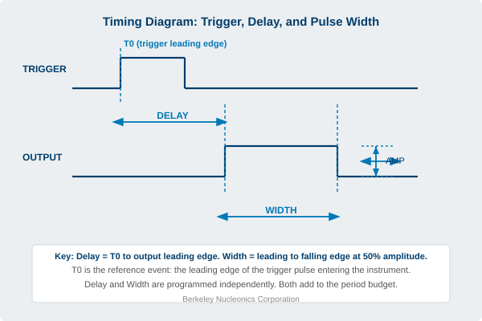
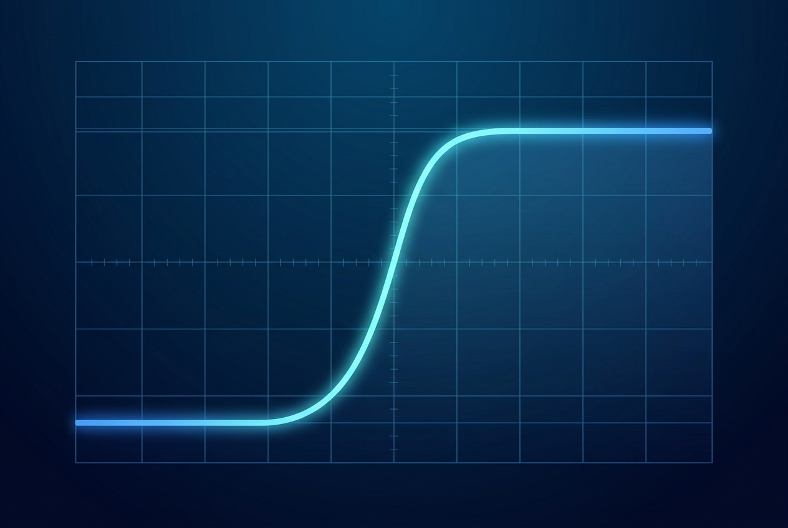
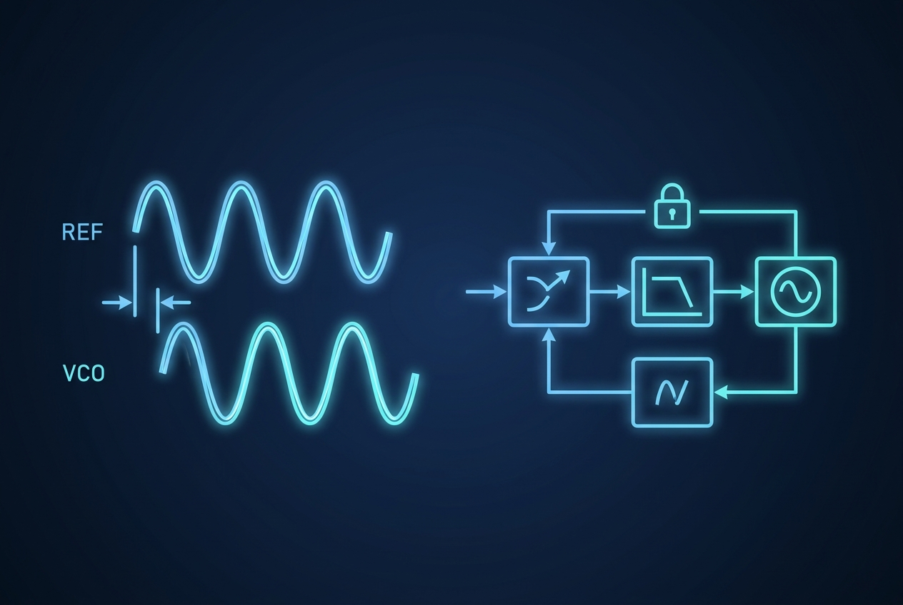
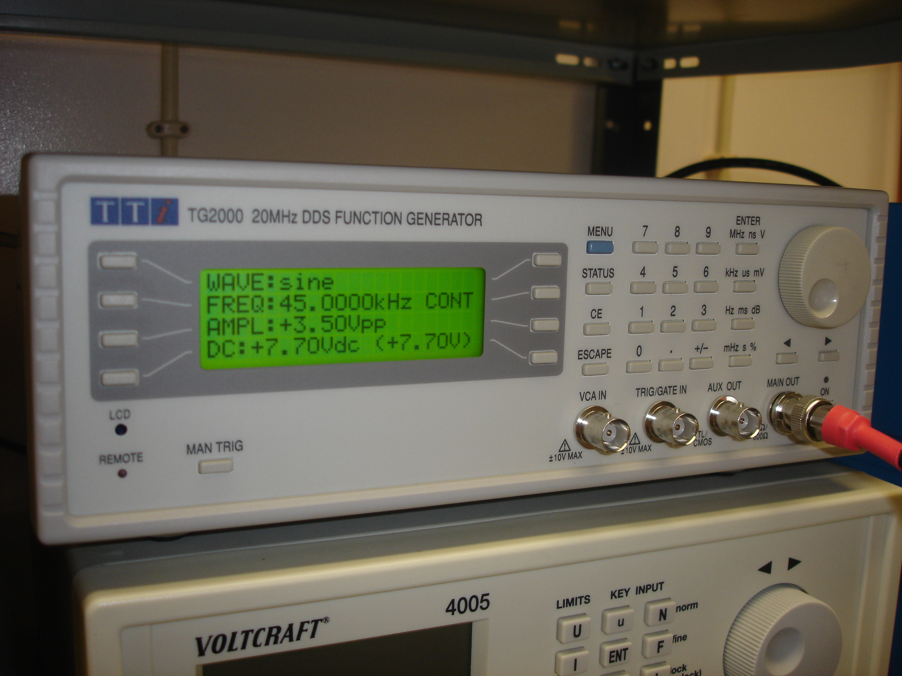
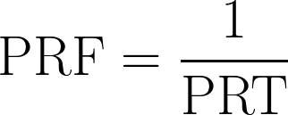

This glossary collects the core vocabulary of precision timing used throughout the book. Definitions are written to be read on their own. They describe how each term is used in the context of bench pulse generators and timing systems.
These definitions are general descriptions, not instrument specifications. Confirm any numeric figure or tolerance against the applicable instrument's datasheet before publication.
10-90% / 20-80% reference points. The amplitude percentages between which rise or fall time is measured. The 20-80 pair avoids the rounded corners of fast edges and reads shorter for the same edge.
10 MHz reference. The industry-standard shared reference frequency, exposed as an input and often an output, used to synchronize instruments to a common time base.
Accuracy. The tolerance of a timing setting, describing how closely the instrument delivers the requested value. Accuracy combines a fixed term with a term that grows for longer delays and widths, often expressed in a form such as 1 ns + 0.001 x Width. Distinct from resolution, which is the size of the smallest settable step.
Active-high / active-low. The chosen gate polarity that defines which gate state, high or low, enables output.
Amplitude. The size of the voltage step from baseline to top of an output pulse, typically adjustable in volts. Some pulse generators also provide optical outputs that mimic the properties of the electrical output.
Arm. A preparatory state that readies the instrument to accept the next trigger before any output is launched.
Arm and trigger sequence. A two-step start in which an arm event enables the instrument and a separate trigger then launches the cycle.
Bandwidth-rise time product. The approximate constant, about 0.35 for a 10-90 measurement and about 0.22 for 20-80, linking an edge's rise time to the frequency bandwidth needed to carry it.
Baseline (low level). The resting voltage the output holds between pulses.
Bipolar / biphasic output. An output that can produce both positive and negative excursions, or a negative excursion following a positive one.
Burst. An output mode that produces a preset number of pulses following a single trigger, after which the channel is inhibited. Used when a test calls for a fixed-length train of pulses per trigger.
Burst gating. Using a gate to frame a finite group of pulses, emitting a defined number while the gate is active.
Burst rate. The rate of pulses within a burst, distinct from the rate at which whole bursts repeat.
Burst repeat rate. The rate at which whole bursts repeat.
Cavity dumping. Holding energy in a laser resonator and switching it all out in one short burst whose length is set by the cavity round-trip time.
CE Marking. A conformity mark declaring that a product meets the applicable European Union directives.
Channel. One independently programmable timing output, usually presented on its own connector. Multiple channels in a timing system share a common clock but can carry different voltages, modes, and timing.
Channel mode. A per-channel output setting that operates within whatever the system mode allows.
Characteristic impedance (Z0). The impedance a transmission line presents to a fast edge, conventionally 50 ohms.
Clock-In. A port that lets a pulse generator synchronize to an external clock instead of its internal oscillator, so the instrument can follow a shared system reference.
Coincidence timing. Counting detector clicks that fall within a narrow common window.
CSAC (chip-scale atomic clock). A miniaturized rubidium or cesium reference for portable and embedded use.
Dead time. Deliberate gap left between events, or before the end of a period, to protect the load and to leave timing margin.

Delay. The programmed time interval from the internal or external trigger to the output pulse. Delay is usually measured from the leading edge of the trigger pulse (To) to the leading edge of the timed pulse.
Delay chaining (relative timing). Referencing one channel's delay to another channel rather than to To, so moving the reference moves the dependent channel and holds their spacing.
Delayed extraction. The controlled wait before the extraction pulse in time-of-flight mass spectrometry that sharpens mass resolution.
Diode-pumped vs lamp-pumped. Pump architectures for solid-state lasers that differ in stability, speed, and achievable jitter.
Droop (sag, tilt). A gradual decline of the pulse top level across the pulse width, typically from AC coupling or charge-limited capacitors.
Duty cycle. The fraction of each period during which the output is high, expressed as a percentage. It ties pulse width to repetition rate and often limits how hard a load can be driven.
Duty Cycle Mode (Divide by N). An output mode that produces a preset ratio of pulse to no pulse, configured with an on cycle (number of pulses to produce) and an off cycle (number of pulses to skip).
Electro-optic effect (Pockels effect). The linear change of refractive index with applied electric field.
Event-based timing system. An accelerator timing backbone that broadcasts codes to distributed receivers.
External clock input. An input that lets the instrument run on an outside clock instead of its internal oscillator.
External Reference. An external clock or oscillator that supplies the timing signal to the master system, usually through a front panel connector. The internal phase-locked loop locks to the external signal.
External Trigger. A trigger source supplied from outside the instrument, normally on a connector marked TRIG IN. The user sets the threshold and the slope (leading or falling edge) that the incoming signal must satisfy to start a timing cycle.
Fall Time. The time the trailing edge takes to drop between two reference levels of the pulse amplitude, commonly 90% to 10%. Adjustable on advanced pulse generators, alongside rise time.
Feed-through terminator. An inline 50 ohm load placed at a high-impedance input to terminate the line.
Femtosecond. One quadrillionth (10^-15) of a second, the emerging regime for the best optical timing.
Flash lamp. A pulsed lamp used to optically pump a solid-state laser gain medium.
Framing camera. A camera that takes a short burst of full images at a very high frame rate.
Gate (Gate In). A control input that uses a gate pulse to enable or inhibit outputs without changing the timing program. Set Active High or Active Low to define which state enables output.
Gate width / gate delay. The duration and placement of a detector's on-window.
Gated detector. A detector switched on only during a chosen window to reject unwanted light.
Gated triggering. Triggering allowed only while a separate gate signal is in its active state.
GNSS-disciplined oscillator. A local oscillator steered to match a GPS or GNSS reference so it inherits long-term atomic accuracy.
GPIB (General Purpose Interface Bus). A parallel instrument-control bus long used to connect test equipment to a controlling computer, alongside RS-232, USB, and Ethernet.
GPS-disciplined oscillator (GPSDO). A local oscillator steered to satellite time for traceable long-term accuracy.
Half-wave voltage. The voltage that produces a full polarization rotation in an electro-optic modulator.
Hardware gate. A physical gate input that responds in real time at the speed of the electronics.
Holdover. The period a disciplined oscillator stays within spec after losing its reference, such as during a GNSS outage.
ICCD. An intensified CCD whose intensifier can be gated to a sub-nanosecond window.
IEEE-1588 PTP. The Precision Time Protocol, a standard for packet-based time distribution over ordinary networks.
IEEE-488.2. The messaging and common-command standard that SCPI builds on, defining shared commands such as *IDN?, *RST, and *OPC? that compliant instruments answer.
Illegal-setting flag. An instrument's rejection or warning, at programming time, of a parameter combination that would create a conflict.
Impedance matching. Making source, line, and load impedances equal to suppress reflections.
Insertion Delay. A fixed delay built into the design of a timing system, measured from the Trigger In signal to the triggering of the first timing period. Good designs minimize it to allow fast triggering from the initial input.
Internal rate generator. The built-in programmable oscillator that sets the repetition rate and fires the start of each cycle when an instrument runs internally.
Internal Reference. The master clock internal to a timing system, typically an oscillator with a well-defined frequency that provides the start pulse for each channel.
Internal Trigger. A trigger source from the instrument's own rep-rate generator. The internal trigger selects this generator as the source for timing cycles and usually lets the user set the rate.
Intra-burst rate. The rate of pulses inside a single burst.
Jitter. The cycle-to-cycle variation in when an output edge actually appears.
Kicker magnet. A fast pulsed magnet that steers a beam bunch on a tightly timed trigger.
Leading Edge. The rising transition that begins a pulse. Delay and width are commonly referenced to the leading edge of the relevant pulse.
LIDAR / range gating. Time-of-flight ranging with a detector gate set to a chosen range slice.
LIF (laser-induced fluorescence). Exciting a species and gating a detector to its fluorescence.
LXI (LAN eXtensions for Instrumentation). A standard for Ethernet-based test instruments that supports network discovery and browser-based configuration.
Master clock. The single reference, internal or external, from which every channel's timing is derived.
Master / slave timing. An arrangement in which one reference or instrument distributes a clock that other instruments lock to.
Merged pulses. Two pulses fusing into one wider pulse when they touch or overlap in time.
Multiplex. A configuration that combines the outputs of several channels onto a single output connector as a composite timing sequence.
Nd:YAG. A common neodymium-doped solid-state laser gain medium.
Normal Mode. An output mode that produces one output pulse per trigger.
OCXO (oven-controlled crystal oscillator). A temperature-stabilized crystal reference with low phase noise and good short-term stability, commonly used to ride out holdover.
Offset (bias). A shift applied to the whole pulse, moving baseline and top together.
Optical clock. An atomic clock based on an optical transition, offering accuracy beyond traditional microwave references.
Optical delay line. A path-length delay, about 0.3 m per nanosecond, used for fine, jitter-free pump-probe steps.
Optical Output. An optical pulse output that mimics the properties of the electrical output on pulse generators that offer it.
Optical-to-RF distribution. Fanning out a stable optical reference over fiber and converting it to electrical or RF triggers at each endpoint.
Oscillator-amplifier chain. A small stable laser oscillator feeding one or more amplifier stages, each separately pump-timed.
Output inhibit. Gating that cuts the output immediately, truncating any pulse in progress.
Output mode. The rule a channel uses to turn incoming triggers into output pulses: normal, single shot, burst, duty cycle, wait, or multiplex.
Overlap condition. A timing program that asks a channel or a shared resource to do two incompatible things at once.

Overshoot. The amount an edge rises above its final level before settling, usually expressed as a percentage of amplitude. Generally undesirable. Minimized with low-capacitance cable and 50 ohm termination, and influenced by output voltage.
Peak-to-peak jitter. The full spread of timing error. It grows with sample size and must cite its sample count.
Period. The time from the start of one timing cycle to the start of the next, the budget every channel must fit inside.
Period budget. The accounting in which the sum of all channel delays, widths, and dead time must fit inside one period with margin.
Phase noise. The frequency-domain description of an oscillator's timing imperfection near the carrier.

Phase-Locked Loop (PLL). A circuit that disciplines a local oscillator to track an external reference by comparing and steering phase, so the two share a common phase and frequency.
PIV (particle image velocimetry). Two closely timed light sheets and two exposures used to extract a velocity field.
PLIF (planar LIF). Laser-induced fluorescence across a light sheet for two-dimensional imaging of flames and plasmas.
Pockels cell. An electro-optic crystal whose birefringence varies with applied voltage, used as a fast, no-moving-parts optical switch.
Pockels cell driver. The high-voltage electronics that swing a Pockels cell, with fast edges and an adjustable trigger delay.
Polarity. The direction a pulse moves from its baseline: positive (upward) or negative (downward).
Preshoot. A small artifact appearing just before the main edge, often from coupling or filtering in the path.
Pulse build-up time. The jittery interval between a Q-switch opening and the emergence of the full optical pulse.

Pulse Generator. An instrument that produces controllable output pulses. Bench pulse generators typically allow control of repetition rate, pulse width, delay from a trigger, and amplitude, with rise and fall time control on advanced models.
Pulse inhibit. Gating that blocks new triggers but lets an in-progress pulse finish cleanly before output stops.
Pulse picking. Selecting single pulses or short bursts from a high-repetition-rate pulse train.

Pulse Repetition Rate / PRF (Pulse Repetition Frequency). The number of pulses per second from a periodic source, set by the internal rate generator or supplied by an external clock. The period is its reciprocal.
Pulse swallowing. The dropping of a pulse when a new one is demanded before the previous pulse ends.
Pulse-top flatness. How constant the top level stays over the pulse duration.
Pump-probe. A two-pulse method where a pump triggers a process and a delayed probe interrogates it.
Q-switch. A device that holds a laser cavity below threshold, then suddenly raises its Q to release a stored-energy giant pulse.
Q-switching (active vs passive). Active uses a controlled switch fired on a trigger; passive uses a saturable absorber that self-triggers.
Radar target simulation. Returning a delayed copy of a received radar pulse to mimic a target at a chosen range.
Reflection. Energy that bounces back from an impedance discontinuity.
Reflection coefficient (Gamma). The fraction of an incident wave reflected at a junction, (Z_load - Z0) / (Z_load + Z0).
Regenerative amplifier. An amplifier that traps a seed pulse for many gain passes, then switches it out at peak energy.
Resolution. The finest settable step for a timing property. A 5 ns resolution instrument, for example, sets delays and widths in 5 ns increments. Distinct from accuracy.
Ringing. Damped oscillation around the final level following a fast edge.
Rise Time. The time an edge takes to climb between two reference levels of the pulse amplitude, commonly 10% to 90% or 20% to 80%. Preserved with careful cabling and 50 ohm termination.
RMS jitter. The standard deviation of timing error, a stable and convergent statistic.
RoHS. A restriction-of-hazardous-substances standard limiting certain materials in electronic equipment.
Root-sum-of-squares (rise time). The rule that cascaded, non-interacting stages combine their rise times in quadrature, t_observed ≈ sqrt(t1² + t2² + ...).
Round-trip delay. The time an edge takes to travel to the far end of a cable and back, which sets when reflections appear.
Rounding. A softened corner where edge meets top, indicating limited bandwidth.
Rubidium reference. An atomic frequency reference with excellent long-term stability.
Runt pulse. A pulse that fails to reach full amplitude, often because a cycle boundary or gate arrived mid-pulse. A load may or may not recognize it.
SCPI (Standard Commands for Programmable Instruments). The structured command language modern instruments use so that menu settings can be set and retrieved remotely, with the same syntax across interfaces such as RS-232, USB, Ethernet, and GPIB.
Seeding (injection seeding). Timing a stable seed pulse into a laser amplifier's gain window.
Settling time. The time for the output to enter and remain within a defined error band of its final value.
Shot Counter. A function that tracks the number of output pulses, or shots, the instrument has produced. Useful for confirming a known total number of pulses or that a sequence ran to completion.
Single Shot. An output mode that produces one output pulse on the first trigger only, after which the channel is inhibited.
Slew rate. The rate of voltage change of an edge, volts per unit time, the steepness of the transition at the threshold.
Slope. The edge of a trigger pulse, leading or falling, selected as the one that starts a timing cycle when using an external trigger.
Software gate. A bus command that enables or disables outputs, flexible but carrying command-path latency.
SPAD (single-photon avalanche diode). A gated single-photon detector biased above breakdown only during an expected-arrival window.
Streak camera. An instrument that sweeps an image to convert time into a spatial axis at picosecond resolution.
Synchronous Ethernet (SyncE). Physical-layer frequency distribution over Ethernet, often paired with PTP for full time and frequency sync.
System Mode. A timing parameter set above the individual channels. When applied, it can constrain or override the behavior of all channel modes at once.
Termination. The impedance presented at the end of a cable, supplied by a resistor that absorbs the edge to prevent reflection. A 50 ohm load (parallel) or source (series) termination with low-capacitance cable gives the fastest rise times without overshoot. Higher termination resistance can speed the edge but tends to introduce overshoot.
Threshold. The discriminator level an external trigger signal must cross to count as a trigger. A pulse that fails to cross the threshold does not trigger the system.
Time of flight (TOF). Inferring distance or mass from elapsed time. In LIDAR ranging, the round-trip interval converts directly to distance.
Time-of-flight mass spectrometry (TOF-MS). A mass spectrometer that separates ions by drift-tube flight time.
Time-resolved spectroscopy. Spectra acquired as a function of pump-probe delay.
Time-tagging. Recording the precise arrival time of events such as single-photon detections.
Timing signal. A pulse or edge placed deliberately in time relative to a reference, characterized by its rate, delay, width, and edge shape.
To (Trigger Reference). The start-of-cycle marker at the leading edge of the trigger pulse, from which delay to the timed pulse is measured.
Transmission line. A cable treated as a distributed-impedance path once edges are fast relative to round-trip delay.
Trigger. The event that starts a timing cycle. Sourced internally from the rep-rate generator or externally on the TRIG IN connector.
Trigger holdoff. A blanking time after a trigger during which further triggers are ignored, preventing double-triggering and enforcing minimum spacing.
Undershoot. The amount an edge dips below its final or baseline level before settling.
VISA (Virtual Instrument Software Architecture). A standard I/O software layer that lets a control program address an instrument the same way regardless of the physical interface, used from LabVIEW, Python, MATLAB, and C.
Wait. An output mode, or special function, that holds a channel off for a set number of pulses before it begins uninhibited output.
WEEE. A standard governing the collection and end-of-life handling of waste electrical and electronic equipment.
White Rabbit. An open, CERN-developed extension of PTP using synchronous Ethernet and phase measurement for sub-nanosecond, picosecond-class network synchronization.
Width. The duration of a pulse in the time domain, measured from the leading edge to the falling edge at half of maximum amplitude.